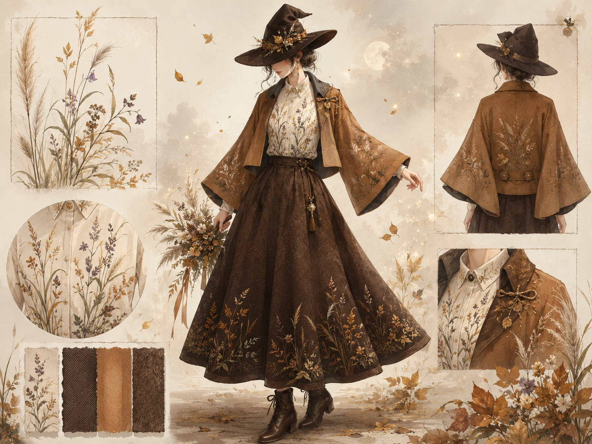

04 / Sewing Competition
洋裁全国コンクール
中学2年生の頃、一人で全国ホームソーイングコンクールに応募しました。手芸や服づくりでも、自分の手で作品を完成させ、外の世界に挑戦することはできるはずだと思い、全国規模のコンクールに挑戦した記録です。

文化部でも、外の世界に挑戦できるはず
当時の学校では文化部の選択肢が限られており、「文化部では大きな成果を残しにくい」という空気がありました。けれど、手芸や服づくりでも、自分の手で作品を完成させ、外の世界に挑戦することはできるはずだと思い、全国規模のコンクールに挑戦しました。
「秋の魔法使い」をテーマにした一着
制作したのは、「秋の魔法使い」をテーマにした衣装です。七草の刺繍を施したシャツ、茶色のフレアシルエットのウールスカート、キャラメル色のショート丈コートを組み合わせ、秋の植物や物語性を感じられる一着を目指しました。
独学で、完成まで持っていく
周りに洋服を縫える人はいなかったため、本やYouTubeを教材にしながら、デザイン、型紙、生地の裁断、裏地付けまで独学で進めました。初めての工程ばかりで時間はかかりましたが、無事に応募期限に間に合わせ、優秀賞をいただくことができました。
この経験は、技術や環境が十分でなくても、調べ、考え、手を動かし続ければ、自分の想像したものを形にできるのだと知った最初の大きな挑戦でした。